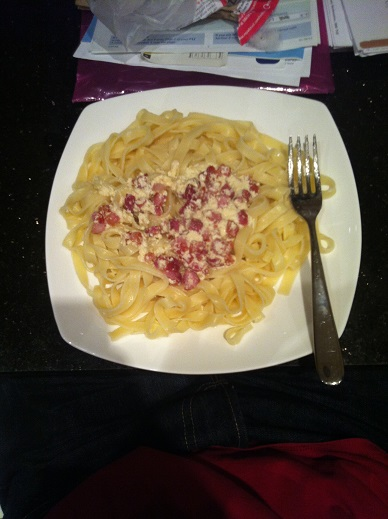

Les pâtes à la carbonara

Pour la cuisson des pâtes nous vous invitons à voir notre page: Pâtes.
Passons maintenant à la carbonara!!
- Ingrédients obligatoires:
- Pâtes
- Gros sel
- Crème fraiche
- Lardons
- Huile
- Ingrédients facultatifs:
- Oeuf (fortement conseillé)
- Fromage rapé
- Outils nécessaires:
- Casserole
- Poêle
- Cuillère en bois
- Passoire
- Temps de cuissons:
- Péparation:
- Commencer à faire chauffer de l'eau dans une casserole ET de l'huile dans une poêle
- Quand l'huile est chaude mettre les lardons dans la poêle ET les remuer de temps en temps
- Ajouter une pincée de gros sel dans la casserole lorsque l'eau est à grosse ébullition
- Mettre les pâtes dans l'eau et ne pas oublier de mettre un minuteur pour savoir quand arrêter le feu
- Remuer les pâtes avec la cuillère en bois (pour ne pas abimer la casserole) de temps en temps
- Vérifier la cuisson des lardons: faîtes attention ils doivent être bien cuits
- Lorsque l'alarme sonne, égoutter les pâtes à l'aide de la passoire
- Mettre la crème fraiche dans la casserole et y ajouter un oeuf (si possible) puis remuer afin d'homogénéiser la sauce
- Rajouter les pâtes lorsque l'ensemble est homogène
- Laisser chauffer l'ensemble jusqu'à ce que la crème soit chaude ET vérifier la cuisson des lardons
- Quand les lardons sont prêts, les ajouter dans la casserole puis bien remuer le tout
- Astuces: Prenez des tagliatelles comme pâtes!!
Pour les pâtes: ça peut varier de 5 minutes à plus de 10 minutes: ainsi cf le paquet de pâtes.
Pour la carbonara: 10 minutes environ.